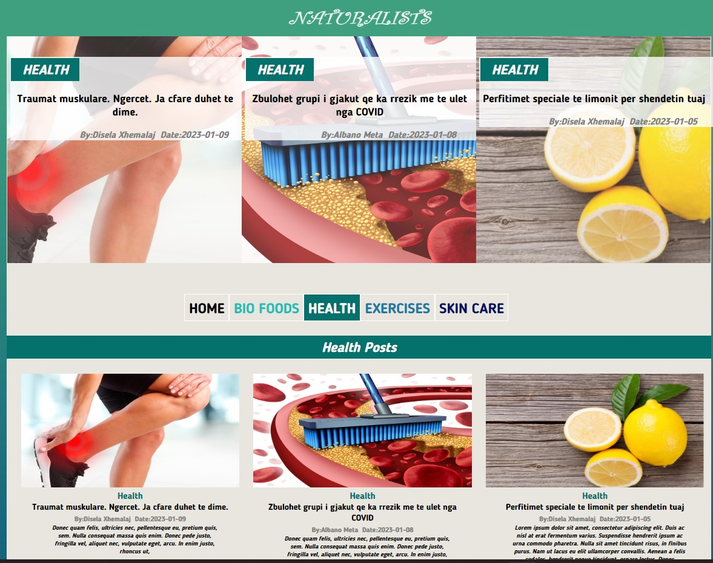

My blog website description
This website has the idea of creating a blog with articles about:
bio food, exercises, health and skin care.
The idea is simple.
The home page has a navigation menu that includes all the categories discribed above.
It includes a database that has the catogory( specifically all the menus above), the title, the descrpition, the author and the date.
The Home menu includes a slideshow , made with JavaScript that change every 3 seconds.
It takes from the databese the last 3 articles ordered by date, using PHP and MySQL and shows in
the page on photo of the article,the title and a short description.
The Home menu, also takes all the last articles by the database ordered by date, using PHP and MySQL,
and shows them in page including a photo, the title, a short description and the author and the date.
Every other category has the same idea as home. The technics used are the same. The only differnce in the code is that it select the articles of the specific category. This is also made with PHP and MySql Select function.

The user can click in the photo or in the title of every article and this is conected with PHP with the specific article clicked.
This opens a page of every article that has the title the descripton, 2 photos.
And in the right side of the page it shows the location of
where the user is and the last 8 articles posted with the specific category.
The toogle mobile menu is also made with JavaScript. It opens a curtain with the menu links when clicked and closes it when X
is clicked.
The website also has a pagination, showing in every page the specific number of articles.
This is made with SQL, calculating with ceil function the number of pages based on the number of articles that are in the database.
I am presanting below the link where you can see the website, naturalist, how it works.
Naturalist WebsiteI am also presanting the github link where you can find the the code I have used.
Naturalist GitHub Code